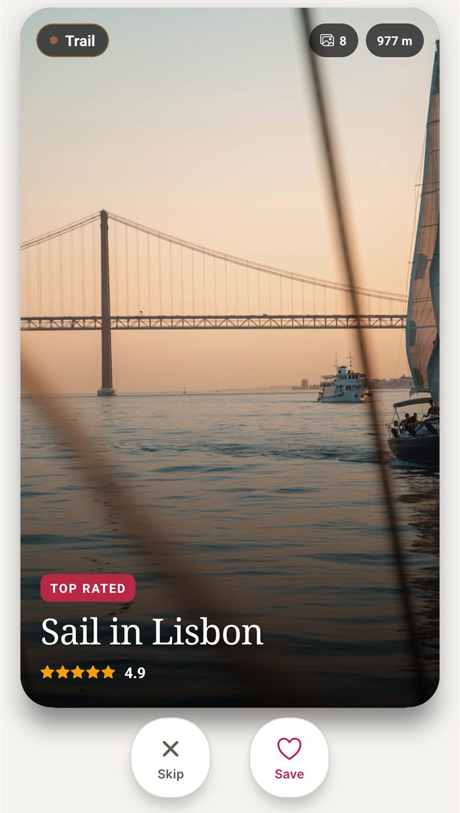
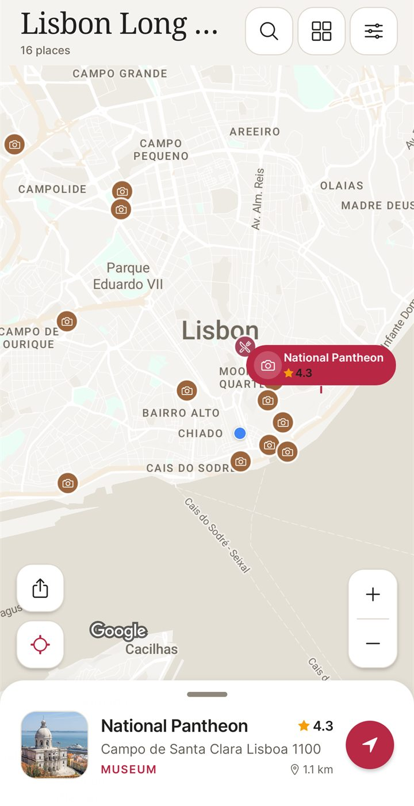
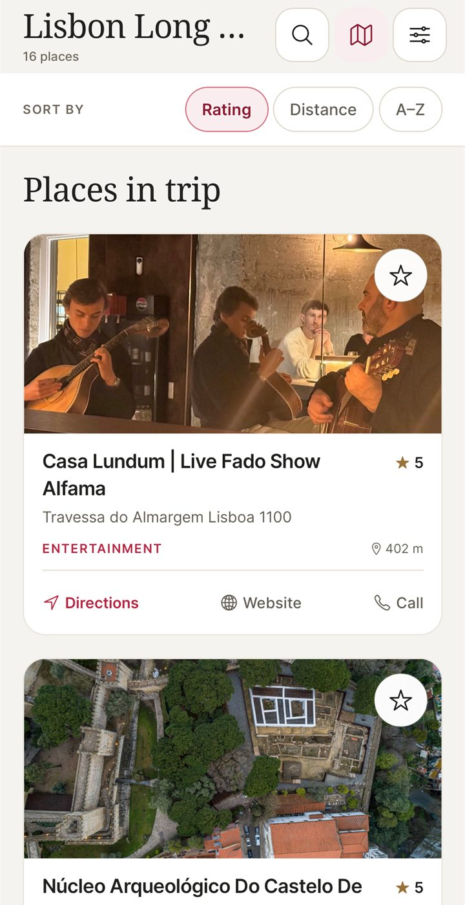

2 Sygic Travel Alternatives Compared in 2026
Sygic Travel is now called Tripomatic, a trip planner with itinerary building and travel guides. Its Google Play listing shows 4.2 stars from 18.4K reviews. NomadSwipe is an Android app for another job: swiping through real places in one city and saving the ones you like onto a map.
This page is for people who want one of three things: a day-by-day itinerary with a map, offline maps for a trip without signal, or help choosing what to see. It covers the two alternatives whose pages we read on this date, and it says where each one is the better pick.
At a glance
| App | Best for | Price | Key difference |
|---|---|---|---|
| NomadSwipe | Shortlisting real places in one city by swiping | Download on Google Play; optional Premium (Monthly or Lifetime), price shown in Google Play | Swipe-based discovery; Android only |
| Sygic Travel (Tripomatic) | Day-by-day itineraries with travel guides and offline maps | Premium bought through Google Play, with a trial; price shown in the store | Itinerary builder and guides; offline use and AI planning need Premium |
| Wanderlog | An itinerary with a map in one view | Not confirmed this run; see its site | Itinerary, map and bookings in one app |
NomadSwipe
Best for: choosing places in a city by swiping
NomadSwipe is an Android trip planner for finding places. You pick a city and it shows real places one card at a time. Tap Save or swipe right to keep a place, and tap Skip or swipe left to pass. Saved places are pinned on a map for that trip, and the list can be sorted by rating, distance or A to Z.



- Strength: a quick shortlist of places you chose yourself, before you have a plan.
- Limit: it does not build a day-by-day itinerary. The Google Play listing describes swiping, saving and a map, and you plan each day yourself around it.
- Limit: it is Android only.
The base plan includes 3 trips, 2 destination searches and 2 custom pins a month, with a limited number of swipes. Premium (Monthly or Lifetime, bought in the app) removes those limits. Up to 20 recent trips are available offline.
Sygic Travel (Tripomatic)
Best for: a day-by-day itinerary with travel guides and offline maps
Sygic Travel is now sold as Tripomatic, published by Tripomatic s.r.o. Its Google Play listing, updated 22 October 2026, describes a day-by-day itinerary planner with estimated travel times and walking distances, sync between devices and its web planner, and invitations for friends to collaborate on trips. Its older Sygic product page says its travel guides cover more than 10,000 locations.
Offline use and AI travel planning sit behind Premium. The listing says you need Premium to use the app without an internet connection. A reviewer on Google Play says the version without Premium is limited to 5 days in a month and one trip. The older Sygic page describes offline maps without naming a plan, so check the current app before you decide.
- Strength: a day-by-day itinerary and travel guides in one app, with offline maps on Premium.
- Limit: offline maps and AI planning need Premium, and a reviewer reports tight limits on the version without it.
Wanderlog
Best for: an itinerary with a map in one view
Wanderlog's homepage describes one app for all travel planning: detailed itineraries, your itinerary and your map in one view, and bookings in the same place. It says you can plan with friends in real time, with live syncing and collaborative editing. The homepage lists offline access among its features but does not say which plan includes it. We did not confirm its price, because its pricing page returned a 404 this run, so check its site before you decide.
- Strength: the itinerary and the map sit in one view, and collaborative editing is listed.
- Limit: the homepage does not say which plan includes offline access, and we did not confirm its price.
Which to choose
- You want a day-by-day itinerary with guides and offline maps, and you accept Premium: Sygic Travel, now Tripomatic.
- You want to shortlist real places in one city on Android: NomadSwipe.
- You want an itinerary and a map in one view, with collaborative editing: Wanderlog, after you check its price.
Questions people ask
Is Sygic Travel the same app as Tripomatic?
Yes, according to its Google Play listing, which calls the app Tripomatic (formerly Sygic Travel).
Does Tripomatic work offline?
Only with Premium. Its Google Play listing says Premium is needed to use the app without an internet connection.
Does NomadSwipe work offline?
Up to 20 recent trips are available offline, according to the Google Play listing and the NomadSwipe site.
Does NomadSwipe build a day-by-day itinerary?
No. It gives you a shortlist of places and a map for each trip, and you plan each day yourself around that map.
Does Tripomatic limit the version without Premium?
A reviewer on Google Play says it is limited to 5 days in a month and one trip. Its listing also offers a trial of Premium, so test the limits in the app before you rely on it.
How much does NomadSwipe Premium cost?
Premium (Monthly or Lifetime) is bought in the app, and the price is shown in Google Play before you pay. This article does not list prices.
Want to shortlist real places in a city? Swipe through them on Android.
Get NomadSwipe on Google PlaySee also: Wanderlog alternatives · Polarsteps alternatives · Mindtrip alternatives · NomadSwipe home · All comparisons